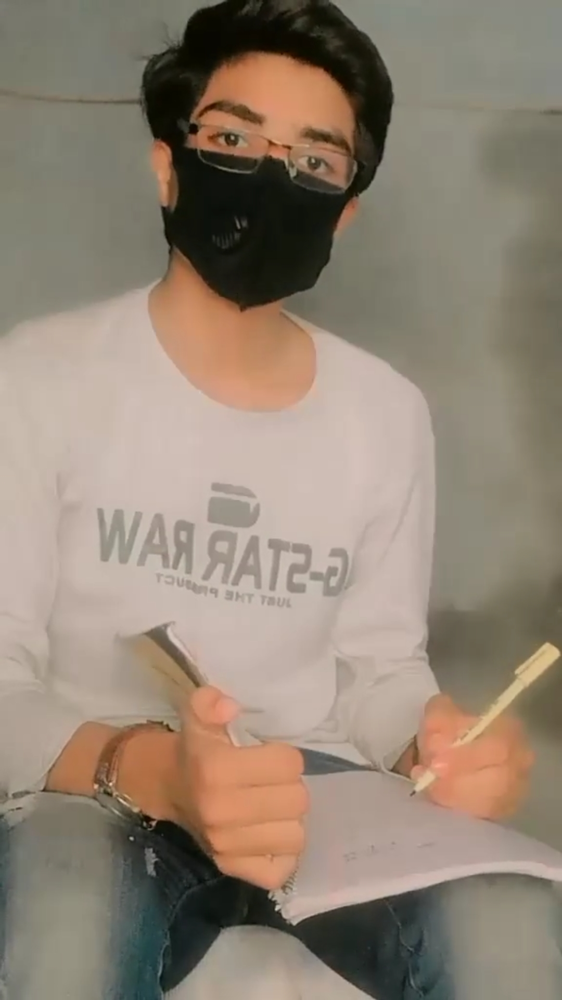

|
As an excellent communicator, Subhan possesses
|  |
"In essence, Muhammad Subhan is more than an admirable individual;
he is a beacon of kindness, a model of excellence, and a catalyst for
positive change in both professional and personal spheres. Muhammad
Subhan's genuine kindness, exceptional communication skills, and
tireless work ethic make him an invaluable asset and a true inspiration to those fortunate enough to know him."